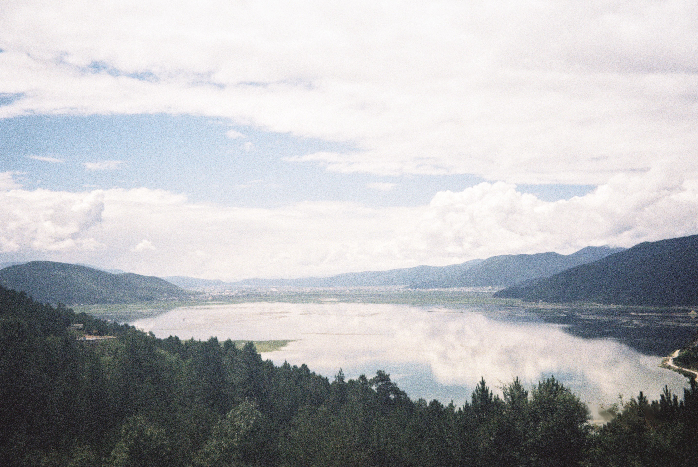
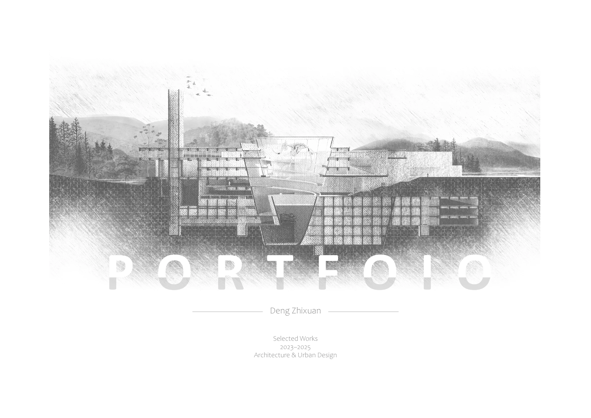
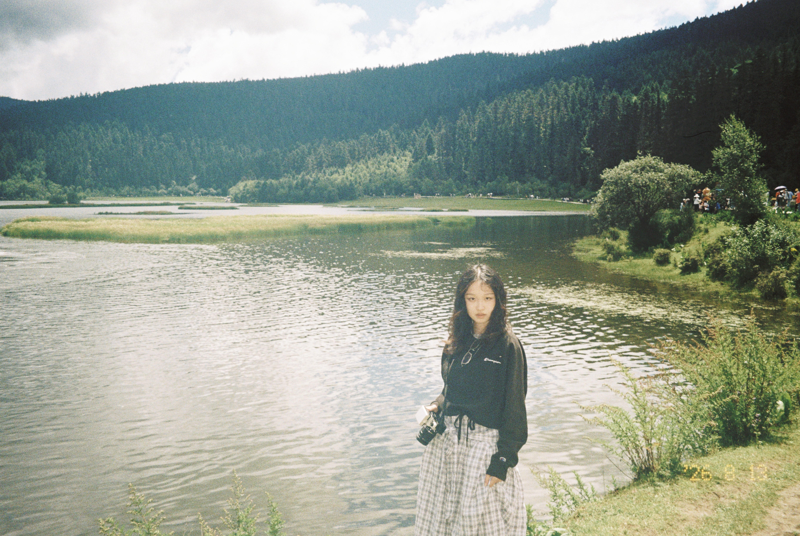
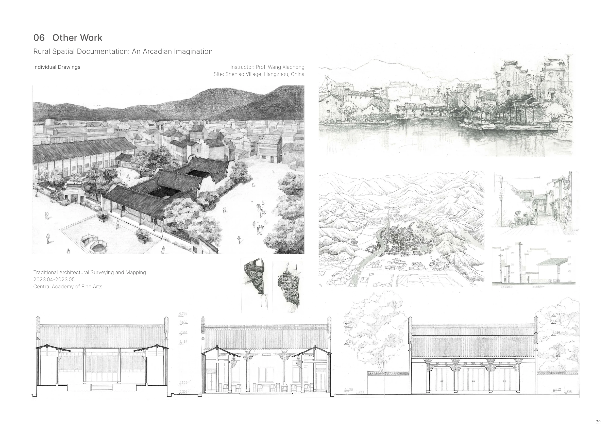

DENG ZHIXUAN
Cities · Space · Everyday Life
Selected Works 2023–2026
In my years of architectural design,
a sensitivity to space and to the human stories within it shaped the way I worked
and earned recognition along the way.
Today, that same way of seeing
has become the foundation for my journey into urban studies.

Selected Projects
Slide to view →

ABOUT
Born in 2004 | Taurus | ENTJ | Photography | Books | Travel | Writing | Drawing
Education
HKU MSc Urban Analytics
CAFA B.Arch
National Scholarship
Research Interest
- spatial/social inequality
- high-density housing
- everyday life
- place attachment
Other Works
Training as an Art Student, Drawing has always been my way of looking closely at a place.
During my undergraduate years, I travelled through villages across China on field trips—from Zhejiang and Jiangxi to Guizhou, Xinjiang, Yunnan, Shanxi, Inner Mongolia and Sichuan
—recording the landscapes, buildings and everyday scenes I encountered
through sketches, paintings and site-specific works.
